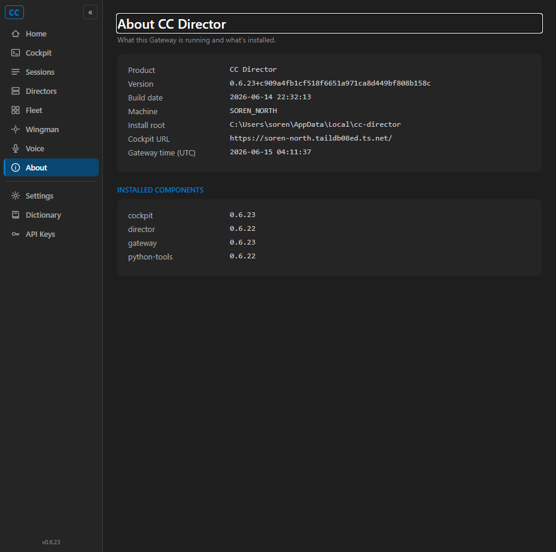
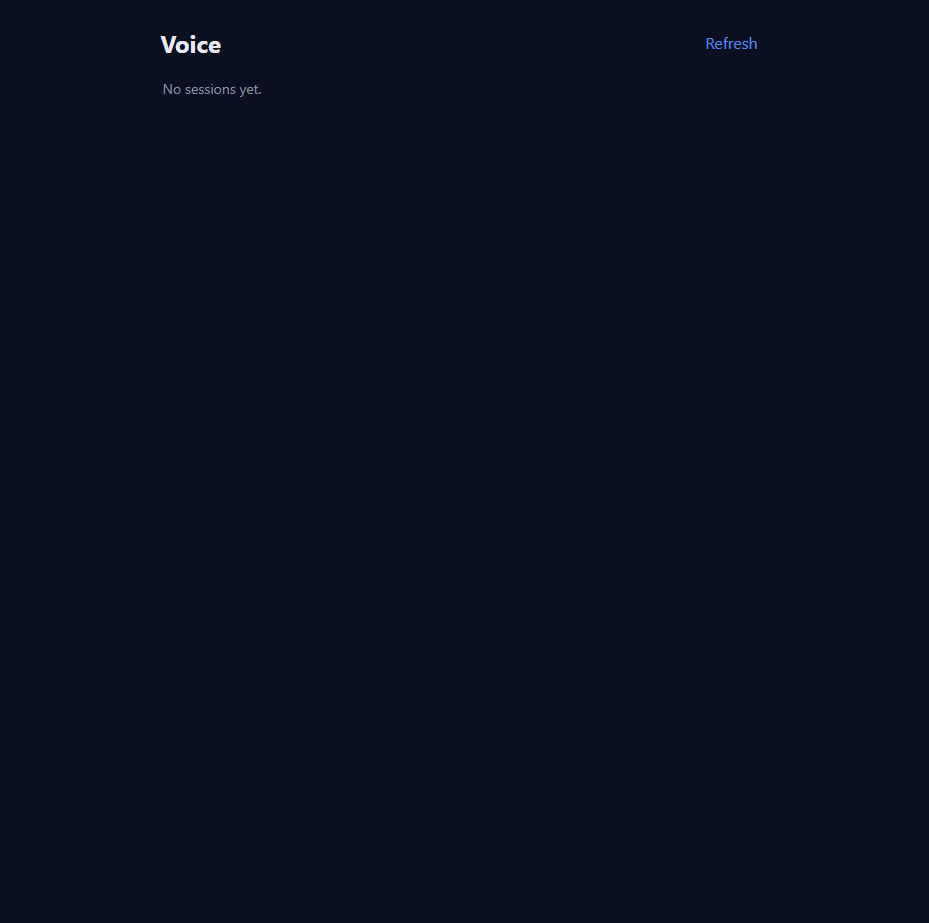
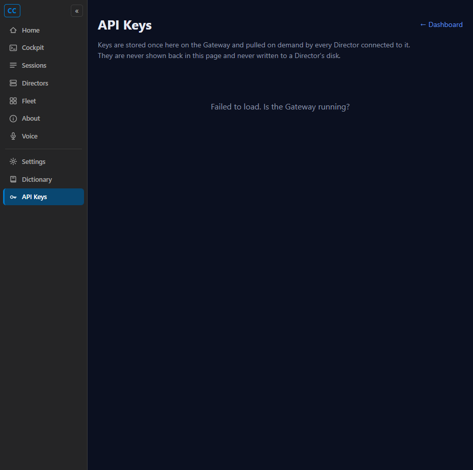
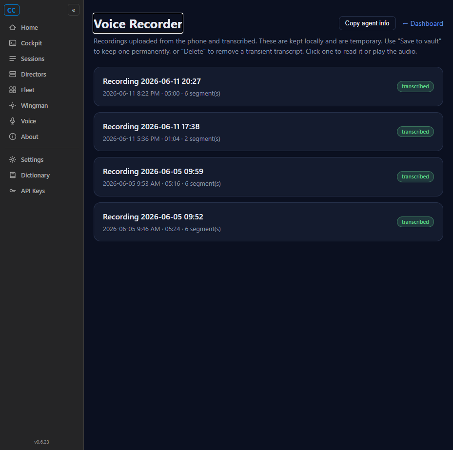

PR: #430 (branch feat/420-voice-nav, commit 4e878db)
QA identity: independent build + run, NOT the developer's binary or screenshots.
Test method: Built the Cockpit from the PR branch in an isolated worktree, ran it on a
dedicated port (Release publish on 7497 for the Blazor circuit; Debug run for static checks), and drove
the actual rendered UI with browser-harness. The user's production Cockpit (port 7470) was never touched.
| # | Criterion | Expected | Actual | Result |
|---|---|---|---|---|
| 1 | Cockpit nav rail shows a "Voice" item with a sensible icon, consistent with the other entries. | A visible "Voice" nav item with an icon, styled like siblings. | Blazor nav rail renders a visible "Voice" item (microphone icon, href=/voice,
hidden:false) between Wingman and About, identical styling to other items. DOM query of
nav.nv .nv-item confirms it is present and not display:none. |
PASS |
| 2 | Clicking it navigates to /voice and the Voice page renders (session list visible). |
Click -> URL is /voice, page renders with the session list view. | Clicking the Voice item navigated to http://127.0.0.1:7497/voice; title
"Voice - CC Director", h1 "Voice", the #session-list / #list-view
session-list view rendered ("No sessions yet." - empty because the isolated test box has no
Gateway sessions; the list UI itself renders correctly). |
PASS |
| 3 | The item also appears in the shared static tool-nav rail (wwwroot/pages/tool-nav.js). |
A static tool page (e.g. /keys) shows "Voice" -> /voice in its injected rail. | On /keys (plain-HTML tool page) the injected rail renders 10 visible items
including "Voice" -> /voice with the microphone icon, positioned after About.
"Recordings" (alpha/hidden) correctly absent. |
PASS |
| 4 | Proof: screenshots of nav item present and /voice open after click. | Two screenshots. | Four screenshots captured (Blazor rail, /voice after click, static tool-nav rail, Recordings page). | PASS |
The Developer renamed the pre-existing hidden /transcripts nav label from "Voice" to
"Recordings" to avoid a duplicate "Voice" label. Verified the /transcripts page still works:
it returns HTTP 200 and renders fully ("Voice Recorder" page with a list of transcribed recordings).
The rename touched only the nav label, not the page. No other nav item changed (all 15 Blazor items and
10 visible static items intact, same hidden/visible state as before).



